This is my note/workaround for the article “25 SQL tips to level up your data engineering skills” by Start Data Engineering, authored by Joseph Machado.
setup
Joseph provided a ready-to-go project regarding this advanced SQL transformation topics in this repo using DuckDB in Jupyter Notebook. We can either run it in the Github codespace or in our local machine with minimal setup.
We use the TPC-H database for demonstration:

#1 handy functions for data wrangling
#1.1 QUALIFY
We use QUALIFY to filter the output column of WINDOW function without creating more CTEs/Subqueries. It’s not available in many traditional/on-prem RDBMS (MySQL, Oracle, MSSQL, PostgreSQL) but available in mordern/cloud-based databases (Snowflake, BigQuery, Databricks, MS Fabric, Teradata).
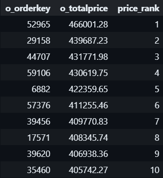
#1.2 DISTINCT ON
Orginated from PostgreSQL, now support by some cloud-based like Snowflake but not in MySQL, SQL Server, Oracle, DISTINCT ON allows us to get 1 detailed row (first or last) for a particular partition.
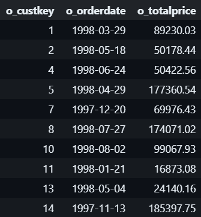
#1.3 This can also be done with ROW_NUMBER() + QUALIFY:
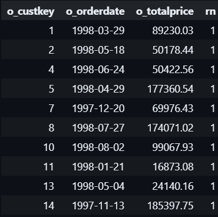
#1.4 STRUCT_PACK()
STRUCT_PACK() is a function primarily associated with DuckDB:
- Creates a compact, binary representation of multiple values;
- Allows you to pack different data types into a single column;
- Useful for data compression and efficient storage.
Below picture depicts how struct works:
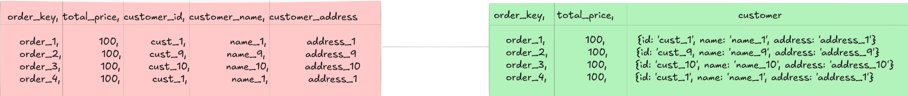
Show the code
WITH order_struct AS (
SELECT
o_orderkey,
STRUCT_PACK(o_orderdate, o_totalprice, o_orderkey) AS order_info
FROM orders
)
SELECT
MIN(order_info) AS min_order_date, -- get min of information from left to right
MAX(order_info) AS max_order_date_price -- get of information from left to right,
-- if there are many txn in that latest day, get the transaction with max price
FROM order_struct;#1.5 BOOL_OR() & BOOL_AND()
BOOL_OR() & BOOL_AND() allows you to check a logical statement along all rows of a columns, supported in PostgreSQL, Snowflake, DuckDB, BigQuery, Databricks:
Show the code
SELECT
o_custkey,
BOOL_OR(cast(o_shippriority as boolean)) AS has_atleast_one_priority_order, -- check whether AT LEAST 1 order of that customer has Is Priority = True
BOOL_AND(cast(o_shippriority as boolean)) AS has_all_priority_order -- check whether ALL orders of that customer has Is Priority = True
FROM orders
GROUP BY o_custkey;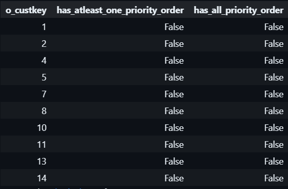
#1.6 EXCLUDE()
When you want to select all (*) columns excet few ones:
#1.7 GROUP BY ALL saves the day
Repeating all the columns listed in the SELECT statement in GROUP BY is annoying, just use ALL:
#1.8 COUNT_IF()
Filter over rows in specific column:
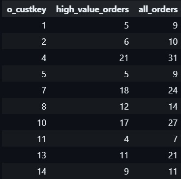
#1.9 STRING_AGG()
Concatenate rows of string in a GROUP BY statement:
#1.10 Null handling with COALESCE()
Handling null value in a column with value from another column or default value:
Show the code
WITH fake_orders AS (
SELECT 1 AS o_orderkey, 100 AS o_totalprice, NULL AS discount
UNION ALL
SELECT 2 AS o_orderkey, 200 AS o_totalprice, 20 AS discount
UNION ALL
SELECT 3 AS o_orderkey, 300 AS o_totalprice, NULL AS discount
)
SELECT
o_orderkey,
o_totalprice,
discount,
COALESCE(discount, o_totalprice * 0.10) AS final_discount
FROM fake_orders;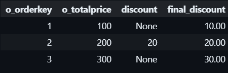
#1.11 GENERATE_SERIES()
This helps you generate a sequence/series of data over a range with an interval which facilitating data simulation or joining with other tables.
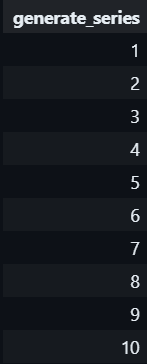
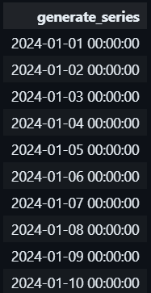
#1.12 UNNEST()
Unpacking data wrapped in JSON array or list [...] using UNNEST():
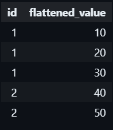
#2 SET operations
#2.1 EXISTS
EXISTS is used to test for the existence of rows in a subquery, return TRUE if any row in the subquery returned. I think it’s often used for logic check to correlate queries.
It checks the existence like INNER JOIN but does not join full rows or select columns from the subquery.
#2.2 INTERSECT
Below query return all c_custkey that appears in both customer and orders table.
#2.3 EXCEPT
And the below query return all c_custkey that appears customer but not in orders table.
Using this, we can perform delta/data diff checking!
#3 macros
We can create UDF (User Define Function) or Macros in SQL for abstracting complex logic and reusing it in different parts of the query, this improves both readability and maintainability. When executing, the macros are expanded inline, which avoids the overhead of function calls. Below is a simple function/macro:
#4 jinja2
Jinja is a fast, expressive, extensible templating engine.
In data engineering, Jinja2 is widely used in:
-
DBT (Data Build Tool)
- Template SQL transformations
- Parameterize database queries
- Dynamic model generation
-
Airflow
- Dynamic DAG (Directed Acyclic Graph) generation
- Parameterize task configurations
-
Great Expectations
- Configure data validation rules
- Generate dynamic expectations
Show the code
from jinja2 import Template
# Define a Jinja2 SQL template with a loop
sql_template = """
SELECT o_orderkey, o_custkey, o_totalprice
FROM orders
WHERE o_totalprice > {{ price_threshold }}
{% if customer_keys %}
AND o_custkey IN (
{% for custkey in customer_keys %}
{{ custkey }}{% if not loop.last %}, {% endif %}
{% endfor %}
)
{% endif %}
ORDER BY o_totalprice DESC;
"""
# Render the template with dynamic parameters
template = Template(sql_template)
# Parameters to be passed to the template
params = {
"price_threshold": 20000,
"customer_keys": [1001, 1002, 1003] # A list of customer keys to filter on
}
# Render the SQL query (do not execute, just generate SQL)
rendered_sql = template.render(params)
print(rendered_sql)And the query be generated:
#5 metadata
The database documentation is normally stored in the information_schema, the first schema that created in DB:
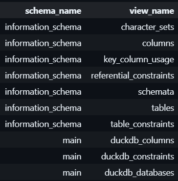
Dive into the table tables:
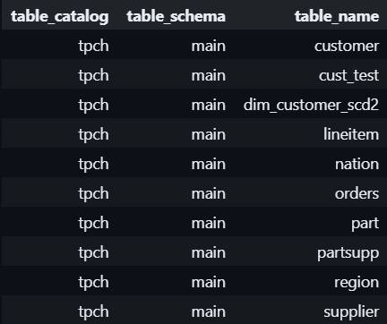
Other useful query for DB admin in DuckDB:
#6 de-duplicate
We can use UPSERT (or MERGE INTO) - INsert new data and UPdate existing data. The syntaxes vary among DBs:
- PostgreSQL:
INSERT ... ON CONFLICT - MySQL:
INSERT ... ON DUPLICATE KEY UPDATE - SQLite:
INSERT OR REPLACE - SQL Server:
MERGEstatement - Oracle:
MERGEstatement
For eg., in DuckDB:
Show the code
DROP TABLE IF EXISTS dim_customer_scd2;
-- Create a Slowly Changing Dimension (SCD Type 2) table for customer
CREATE TABLE dim_customer_scd2 (
c_custkey INTEGER PRIMARY KEY,
c_name VARCHAR,
c_address VARCHAR,
c_nationkey INTEGER,
c_phone VARCHAR,
c_acctbal DOUBLE,
c_mktsegment VARCHAR,
c_comment VARCHAR,
valid_from DATE,
valid_to DATE,
is_current BOOLEAN
);
-- Insert current data from the TPCH customer table into the SCD2 table
INSERT INTO dim_customer_scd2
SELECT
c_custkey,
c_name,
c_address,
c_nationkey,
c_phone,
c_acctbal,
c_mktsegment,
c_comment,
'2024-10-17' AS valid_from,
NULL AS valid_to, -- NULL means it's the current active record
TRUE AS is_current
FROM customer;This query create a new SCD2 table and UPSERT data into it. When managing a table, we can handle (INSERT or UPDATE) like this:
Show the code
INSERT INTO dim_customer_scd2 (
c_custkey,
c_name,
c_address,
c_nationkey,
c_phone,
c_acctbal,
c_mktsegment,
c_comment,
valid_from,
valid_to,
is_current
)
VALUES
(1, 'Customer#000000001', 'New Address 1', 15, '25-989-741-2988', 711.56, 'BUILDING', 'comment1', '2024-10-18', NULL, TRUE),
(2, 'Customer#000000002', 'New Address 2', 18, '12-423-790-3665', 879.49, 'FURNITURE', 'comment2', '2024-10-18', NULL, TRUE),
(1501, 'Customer#000001501', 'New Address 1501', 24, '11-345-678-9012', 500.50, 'MACHINERY', 'comment1501', '2024-10-18', NULL, TRUE),
(1502, 'Customer#000001502', 'New Address 1502', 21, '22-456-789-0123', 600.75, 'AUTOMOBILE', 'comment1502', '2024-10-18', NULL, TRUE)
ON CONFLICT (c_custkey) DO
-- Handle existing customers (Customer#000000001 and Customer#000000002) for SCD Type 2
UPDATE SET valid_to = EXCLUDED.valid_from, is_current = FALSE
WHERE dim_customer_scd2.c_custkey = EXCLUDED.c_custkey AND dim_customer_scd2.is_current = TRUE;#7 JOINs that you’ve never ever seen before
#7.1 ASOF JOIN
An ASOF JOIN (As-Of Join) is a time-series specific join operation that matches rows based on the closest timestamp, typically used in financial and time-series data analysis.
-
Key characteristics:
- Matches each row from one table to the most recent row in another table by time
- Useful for tracking historical state changes
- Common in financial databases and time-series analysis
-
Example use case:
- Joining stock prices with trading orders
- Matching historical prices at the nearest timestamp
- Tracking changes in reference data over time
For eg. “give me the value of the property as of this time”:
Show the code
WITH stock_prices AS (
SELECT 'APPL' AS ticker, TIMESTAMP '2001-01-01 00:00:00' AS "when", 1 AS price
UNION ALL
SELECT 'APPL', TIMESTAMP '2001-01-01 00:01:00', 2
UNION ALL
SELECT 'APPL', TIMESTAMP '2001-01-01 00:02:00', 3
UNION ALL
SELECT 'MSFT', TIMESTAMP '2001-01-01 00:00:00', 1
UNION ALL
SELECT 'MSFT', TIMESTAMP '2001-01-01 00:01:00', 2
UNION ALL
SELECT 'MSFT', TIMESTAMP '2001-01-01 00:02:00', 3
UNION ALL
SELECT 'GOOG', TIMESTAMP '2001-01-01 00:00:00', 1
UNION ALL
SELECT 'GOOG', TIMESTAMP '2001-01-01 00:01:00', 2
UNION ALL
SELECT 'GOOG', TIMESTAMP '2001-01-01 00:02:00', 3
),
portfolio_holdings AS (
SELECT 'APPL' AS ticker, TIMESTAMP '2000-12-31 23:59:30' AS "when", 5.16 AS shares
UNION ALL
SELECT 'APPL', TIMESTAMP '2001-01-01 00:00:30', 2.94
UNION ALL
SELECT 'APPL', TIMESTAMP '2001-01-01 00:01:30', 24.13
UNION ALL
SELECT 'GOOG', TIMESTAMP '2000-12-31 23:59:30', 9.33
UNION ALL
SELECT 'GOOG', TIMESTAMP '2001-01-01 00:00:30', 23.45
UNION ALL
SELECT 'GOOG', TIMESTAMP '2001-01-01 00:01:30', 10.58
UNION ALL
SELECT 'DATA', TIMESTAMP '2000-12-31 23:59:30', 6.65
UNION ALL
SELECT 'DATA', TIMESTAMP '2001-01-01 00:00:30', 17.95
UNION ALL
SELECT 'DATA', TIMESTAMP '2001-01-01 00:01:30', 18.37
)
SELECT h.ticker,
h.when,
p.when as stock_price_ts,
price,
shares,
price * shares AS value
FROM portfolio_holdings h
ASOF JOIN stock_prices p
ON h.ticker = p.ticker
AND h.when >= p.when
ORDER BY 1, 2;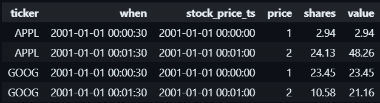
Without ASOF JOIN, we must use a WINDOW function to achieve this.
#7.2 ANTI JOIN
The pattern is to get rows in one table that are not in another table:
Some DBs have native support for ANTI JOIN:
#7.3 LATERAL JOIN
LATERAL JOIN is a powerful SQL join type that allows a subquery in the FROM clause to reference columns from preceding tables in the same FROM clause.
- Enables per-row dynamic subqueries
- Allows correlated subqueries in the FROM clause
- Supported in PostgreSQL, BigQuery, some other modern databases
For e.g, for each row in the orders table (o), the subquery in the LATERAL JOIN selects line items (l) that match certain conditions.
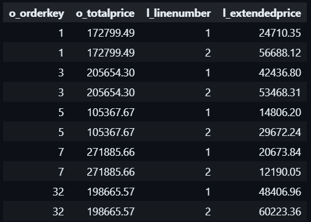
For each row in the orders table (o), the subquery in the LATERAL JOIN counts the number of line items (lineitem_count) related to that order.
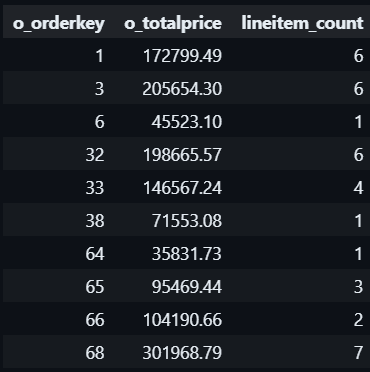
#8 use cases
Some real business use cases:
#8.1 PIVOT
We often want to change a value of a column into individual columns, we can use CASE ... WHEN ...:
Show the code
SELECT
o_custkey,
SUM(CASE WHEN o_orderstatus = 'F' THEN o_totalprice ELSE 0 END) AS fulfilled_total,
SUM(CASE WHEN o_orderstatus = 'O' THEN o_totalprice ELSE 0 END) AS open_total,
SUM(CASE WHEN o_orderstatus = 'P' THEN o_totalprice ELSE 0 END) AS pending_total
FROM orders
GROUP BY o_custkey
ORDER BY o_custkey;But also leverage PIVOT:
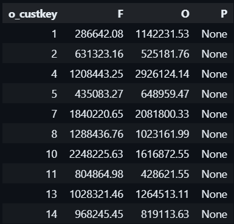
#8.1 CUBE
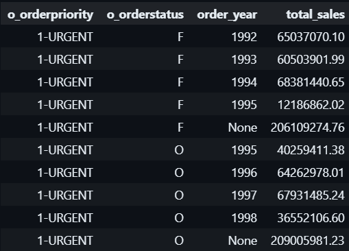
-
CUBE (o_custkey, o_orderstatus, order_year): This will group the data and calculate subtotals and grand totals for all possible combinations ofo_custkey,o_orderstatus, andorder_year. - It will generate all combinations of the grouping columns, including:
- Grouping by just o_custkey
- Grouping by just o_orderstatus
- Grouping by just order_year
- Grouping by all three together
- Grouping by pairs of columns
- A grand total (no grouping by any column)
-
SUM(o_totalprice): For each combination of groupings, it sums the total order price.
Use cases:
- OLAP Reporting: CUBE is commonly used in OLAP scenarios where you need to analyze data from multiple perspectives. For instance, you may want to generate reports that show total sales by customer, by order status, by year, and all possible combinations of these dimensions.
- Sales Analysis: In sales analysis, CUBE can help create pivot-like summaries that show how different attributes (e.g., region, product, time period) contribute to the overall sales.
- Financial Reports: Financial departments often use CUBE to calculate totals and subtotals across dimensions like departments, time periods, and account categories, making it easier to prepare comprehensive financial reports.
Happy learning!
resource
- Article by Start Data Engineering: https://www.startdataengineering.com/post/n-sql-tips-de/;
- Repo and workbook: …concepts/sql_tips/sql_tips.ipynb
Show the code
I added this R code chunk and somehow knitr engine successfully rendered SQL formatting block code.
Workaround: https://github.com/quarto-dev/quarto-cli/issues/2137